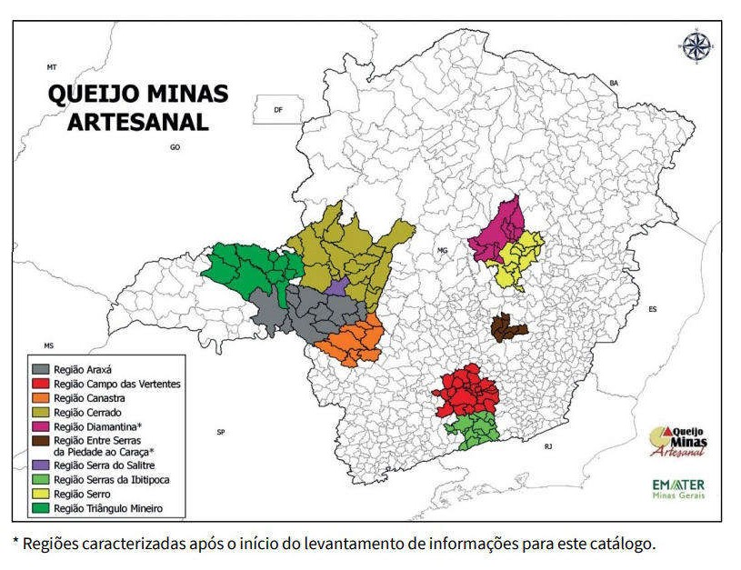

O Patrimônio do Saber Ao homem contemporâneo, a convivência com vestígios do passado costuma gerar conforto identitário, segurança por saber-se parte de uma construção antiga que lhe sustenta e justifica costumes e ações. Quando a construção passada é permanência e tradição vivas e arraigadas na dinâmica das construções culturais, esse conforto se transforma em orgulho identitário e supera o temor pelo esquecimento que geraria sentimento de perda. Modos de fazer tradicionais se enquadram nessa categoria de permanências que sinalizam ao homem moderno sentimentos de orgulho pelos saberes construídos em seu passado. Aos mineiros contemporâneos os modos de fazer artesanais de queijo a partir do leite cru, tradição persistente e em dinâmica transformação em sua cultura, identifica seus modos costumeiros e dá conforto à suas vidas. Além disso, embasa a sobrevivência de numerosas famílias e fundamenta a economia de municípios e de regiões. A idéia de “perda” e o temor que ela incutiu na mentalidade ocidental dos tempos modernos, fatores tão importantes na tradição das buscas de reconhecimento do patrimônio histórico no nosso tempo, são decorrentes de uma concepção de que a história é um processo de destruição de “coisas”, de objetos e de bens materiais. A dinâmica das culturas, no entanto, nos leva a pensar a história como processo de construção de saberes, de fazeres, de estruturas materiais e simbólicas, de sentidos e de representações da 8 realidade. Assim, entendendo como patrimônio cultural a herança histórica e a sua dinâmica transformação (da mesma forma histórica) é que podemos pensar na interpretação e no reconhecimento de modos de fazer tradicionais de um produto sui gêneris importante economicamente para um determinado território cultural. Interpretar os saberes e as técnicas de fatura de um produto artesanal é, sobretudo, enquadrá-lo em um repertório de expressões da cultura que referenciam a constituição identitária de grupos sociais. É tomá-lo como prática enraizada nas relações humanas que se forjaram em um processo histórico específico, identificável e interpretável e que continua em processo dinâmico de construção cultural, mesmo que marcado por uma reprodução tradicional em seu lento processo de mudanças e de adaptações. O queijo artesanal de Minas Gerais e as características formas de sua confecção denotam uma tradição dinâmica radicada em sua origem nas técnicas típicas da serra da Estrela, em Portugal, e que em nossa história formataram formas de fazer próprias. Essa origem técnica que chega à América portuguesa com o colonizador é raiz de uma nova construção intimamente ligada, a cada tempo, à sobrevivência de colonos ibéricos, de indivíduos luso-brasileiros e. por fim, de mineiros. Sua confecção se estabelece, com variações por todo território da Minas Gerais dos tempos antigos e, hoje, tem características específicas reconhecidas para regiões geográficas distintas do Estado de Minas Gerais com condições físico-naturais, econômicas e sócio-culturais particulares. Serro, Canastra, Alto Paranaíba (serra do Salitre ou do Cerrado), Araxá e serras do sul de Minas são micro-regiões onde se estabelecem e se edificam em dinâmica tradição os modos de fazer de um queijo reconhecido mundialmente como “artesanal tipo Minas”. Ele se elabora a partir de leite cru, de uma tradição familiar e de uma economia local que o associa à atividade fundamental da fazenda mineira típica. É o queijo Minas que, a despeito de ter gerado formas industriais de fatura em todo o Estado, não perdeu a força de sua tradição artesanal e não deixou de ser importante, cultural e economicamente, em seu modo de fazer original. Queijo minas artesanal Fonte: Catarina Braga Os fatores físico-naturais de cada uma dessas regiões propiciam pastagens naturais típicas e o desenvolvimento de bactérias específicas que se multiplicam em cada um desses micro-climas e dão a cada queijo aparência e sabor específicos. A esses fatores somam-se vários aspectos sócio-culturais que forjaram um modo de fazer próprio na manipulação do leite, dos coalhos, das massas, das formas de prensagem, da cura, e da tradição comercial. A esse modo de fazer acrescentam-se formas de viver, significados atribuídos, sentidos e simbologias aderidas. A reflexão sobre um saber tradicional que ainda se constitui em uma prática cultural cotidiana torna-se dificultada por uma série de questões que envolvem a própria dinâmica cultural onde se instala. No caso do queijo artesanal de Minas é preciso considerar, dentre outras, o embate entre uma realidade e uma legalidade, na medida em que existe um aparato legal sobre a produção e a comercialização de queijos artesanais, feitos a partir de leite cru que, em nome da segurança alimentar, inibem a prática artesanal. Há, ainda, o cuidado movido pela idéia de que a tradição está se perdendo e corre o risco de ser extinta, muito embora fosse natural pensar que a tradição é um facilitador da continuidade de ações e do processo interpretativo dos modos de fazer tradicionais, uma vez que permanece materializada na sobrevivência de várias comunidades. Os processos tradicionais, no entanto, têm dificuldades em sua reprodução no nosso tempo e isso reforça o medo da “perda” Sem dúvida, há, por fim, uma imaterialidade dessas formas de fazer que nos remete a atribuir dificuldades na apreensão desse nosso objeto de pensar. Dificuldades, no entanto, que enriquecem a busca interpretativa. O patrimônio imaterial ou intangível, a certo momento, terá de ser materializado na sua construção histórica, na sua memória identitária ou no seu registro como patrimônio cultural. Tornar visível a dimensão do invisível é, como nos diz Pomian, a tarefa necessária na transformação de memória em história. As culturas podem ser objetificadas e, ao se tornarem objeto de nossa compreensão, desvelarem identidades, representações, saberes e fazeres construídos e em construção. A dinamicidade dessa construção histórica e a sua permanência a torna patrimônio cultural. A interpretação desse patrimônio, que esse dossiê almeja desvelar, tem como premissa essa tarefa de dar visibilidade ao imaterial, materialidade ao intangível.
Alimento vivo em tradição. Como todo queijo artesanal feito no Brasil, as bases originais do modo de fazer queijo nas Gerais, vêm da tradição portuguesa da serra da Estrela. Como todo produto cultural, transforma-se dinamicamente e busca aderir-se à realidade local, fundamentando estruturas, instrumentos, técnicas e fazeres que lhes são próprios. Na serra da Estrela, região central de Portugal, o queijo Serra, até hoje muito apreciado e, ainda, feito artesanalmente a partir de leite cru, tem tradição antiqüíssima. Elaborado com leite de ovelhas e, majoritariamente com mão de obra feminina, tem seu segredo nas características específicas de temperatura da região, com inverno rigoroso, pastagens de montanha, usando como elemento coagulador do leite, extrato de flor e brotos do cardo. O cardo é um vegetal de flores rosadas ou amarelas, folhas acinzentadas com espinhos e caule ereto com revestimento piloso, sendo considerado uma praga das pastagens. O sistema de prensagem manual dá consistência à massa coagulada e a maturação confere sabor diferenciado ao produto. Prensando a massa do queijo O trabalho feminino é uma realidade em todo o processo de fatura e de maturação do queijo artesanal da serra da Estrela, em Portugal. A região serrana em Portugal apresenta peculiaridades que dão ao produto e a seu modo de fazer características organolépticas e culturais que, também, dão identidade à sociedade local. Flor do cardo O cardo e sua flor são utilizados como coagulante do leite, no processo de fatura do queijo artesanal. Os municípios delimitados como produtores do queijo tipo Serra em Portugal, comungam de características físicas e culturais que lhes dão certa unidade identitária. Mapa DOP: Denominação de Origem Protegida - Portugal O queijo em Minas, desde os primórdios, vai utilizar o leite de vacas coagulado, no início, com coagulante feito à base de retículo (parte do estômago) seco e salgado de bezerro ou cabrito. Na região da Canastra foi comum em tempos antigos, o uso de segmentos do estômago de tatus para o mesmo efeito. Tecnicamente esse coalho, que hoje é industrial, possui duas enzimas – a pepsina e a renina – que proporcionam a coagulação do leite. A tradição do queijo, no Serro, na serra da Canastra, na serra do Salitre, em Araxá, no sul de Minas e em outras regiões, refletindo os processos de reinvenção das tradições, vai utilizar matéria prima local, desde o momento inicial de sua produção. Com exceção do sal, na maioria das vezes importado de outras regiões, o artesanato do queijo já nasce usando o trabalho dos marceneiros locais que, transformando madeiras nobres, também da região, em formas e bancas queijeiras dão suporte material a fatura do produto lácteo. O Porão da Fazenda Engenho de Serra, no município do Serro, onde o proprietário (Jorge Simões) mantém um pequeno “museu do queijo”, com objetos da fatura do queijo artesanal em tempos antigos. Bancas e formas de madeira, cabaças de sal, cochos de soro, formas de metal, dentre outros objetos, memorizam a dinâmica cultural da produção do queijo artesanal. Banca e formas de madeira, inicialmente utilizadas para produção do queijo minas artesanal Formas de madeira para produção do queijo minas artesanal Formas de madeira Banca de ardósia, usada nos dias de hoje para produção e coleta do pingo Balde coletando o soro fermento ou pingo, utilizado para produzir o QMA FONTE DAS IMAGENS: Fazenda Engenho de Serra Atualmente é rara a utilização da madeira nas bancas e as formas de madeira deixaram de ser usadas há muitos anos. Elas guardam a memória de um fazer tradicional e são objetos que documentam essa identidade da fazenda mineira e do fazendeiro das Minas, em museus, centros de memória, hotéis, restaurantes, centros de recepção turísticos e casas mineiras. São símbolos, são emblemas de uma ruralidade que permanece em padrões tradicionais e em dinâmica transformação Utilizam-se, em nossos dias, bancas de pedra ardósia e formas plásticas, materiais de fácil higienização. A dinâmica da tradição reflete, mesmo que lentamente, as mudanças de concepções técnicas, de padrões de higiene e de valores culturais. O fermento que dá as características específicas ao queijo, chamado de “pingo”, é composto por um grupo de bactérias lacto-fermentativas típicas de cada região. Ele é obtido com o soro que drena dos queijos recém manufaturados durante a tarde e a noite do primeiro dia de maturação. É um acervo bacteriano responsável pelo padrão de cada região e reflete a ambiência de cada território, em suas especificidades. O queijo artesanal de leite cru é alimento vivo, em constante aperfeiçoamento pela reprodução desse acervo lático, dessa microflora bacteriana saudável: transforma-se constantemente no processo de maturação, aprimorando massa, sabor, coloração, consistência e componentes nutritivos o que o converte em alimento de riqueza ímpar. Esse é um dos seus valores essenciais. Como o vinho, o azeite e o pão, tríade alimentar de valor simbólico milenar, o queijo artesanal tem valor nutritivo e simbólico que nomeia culturas e distingue grupos sociais. Queijos na sala de maturação Fonte: Catarina Braga Como vimos, esse queijo artesanal é produzido e comercializado nas várias regiões de Minas, desde o século XVIII, como demonstram os documentos acima. No entanto, só a partir da década de 1920, com a construção de rodovias que ligam cada uma dessas regiões a Belo Horizonte – a nova capital e crescente cidade metrópole das Minas – o queijo ganha mercado e fama para além de cada uma delas. QMA sendo tratado com urucum Fonte: Catarina Braga Se pensarmos a produção de queijo industrial no Brasil, veremos que Minas Gerais produz, em seu parque de indústrias de laticínios, mais da metade da produção nacional de queijos. Em sua maior parte constituída de estabelecimentos de porte pequeno, distribuídos em todo o seu território. A produção industrial vem se diversificando, em termos de tipos de queijo, e o queijo Minas vem, nos últimos anos, perdendo espaço para a produção e o consumo de outros tipos como a Mussarela, o Prato, o Provolone, o Cheddar, etc. Essa tradição produtiva, entretanto, tem sua origem na produção artesanal, a partir das propriedades rurais do Estado e, fundamentado nessa permanência cultural, Minas Gerais tem o reconhecimento nacional de Estado produtor do bom queijo ou do bom laticínio. Além disso, a denominação tipológica de queijo tipo Minas, ultrapassou as fronteiras do Estado e nomeia um tipo de produto fabricado em várias partes do país. Bom espaço de verificação dessa tradição é o Mercado Central, em Belo Horizonte. A comercialização do queijo artesanal criou lugares de comércio que funcionam, ainda, como espaços de tradição e de memória identitária. As bancas de laticínios mantêm padrões de comercialização que remontam os sistemas construídos ao longo do século XX e da transformação da capital do estado em centro administrativo e comercial. CETEC, 1987. Tradicional espaço de feira e de comércio de hortifrutigranjeiros, laticínios, produtos cárneos e artesanato, fundado em 1929 e localizado no centro de Belo Horizonte. O Mercado Central recebe cerca de 15.000 visitantes por dia entre consumidores e turistas. Mercado central de Belo Horizonte Aí podemos distinguir práticas que utilizam das associações de produtores, das cooperativas rurais e dos mediadores comerciais, a intermediarem um produto de sua origem, a fazenda, à mesa do consumidor, no espaço urbano da metrópole. Mercado central O setor de laticínios do Mercado Central de Belo Horizonte tem no comércio de queijo artesanal mineiro um atrativo do mercado alimentício e do turismo.
As Regiões Queijeiras em Minas Gerais Minas Gerais é um dos Estados mais montanhosos do país, com um relevo morfologicamente heterogêneo, onde se encontram partes das mais conhecidas feições geomorfológicas brasileiras, como a Serra da Mantiqueira, a Serra do Espinhaço e a Serra da Canastra, dentre outras formações menos conhecidas. Segundo Moreira; Camelier (1977, p. 14), em conjunto, a serra da Mantiqueira forma o segundo degrau do planalto brasileiro e caracteriza-se por uma imponente escarpa voltada para o vale do Paraíba, cujos desníveis excedem a 2.000 metros, e tem seu trecho mais contínuo e expressivo, naquele que forma a escarpa situada ao longo do médio rio Paraíba. O estudo de Moreira; Camelier descreve o relevo do Vale do Paraíba ligando-o ao trabalho erosivo do rio Paraíba do Sul e de seus afluentes. Assim, apresenta-se ora como um “mar de morros”, ora por uma sucessão de cristas gnáissicas separadas por vales profundos, de perfis escalonados, exibindo quase sempre lombadas e patamares a meia encostas. Segundo estudo do Centro Tecnológico de Minas Gerais (CETEC-MG): Esta unidade estende-se a partir das cabeceiras do rio Camanducaia, no sul do Estado, pela divisa de Minas Gerais com São Paulo e Rio de Janeiro, e prossegue de modo descontínuo ao longo da fronteira entre Minas Gerais e Espírito Santo. A partir das cabeceiras do rio do Peixe, afluente do Paraibuna, o bloco maciço da Mantiqueira bifurca-se: uma faixa de elevações prossegue até Juiz de Fora, e a outra até as proximidades de Santos Dumont (CETEC-MG, 1983, p. 30). Quando se desloca para o interior, consoante o estudo ibgeano (1977, p. 16), após se transpor a serra da Mantiqueira, encontra-se o Planalto Sul de Minas ou a superfície do alto rio Grande, que se alonga para o norte até as cabeceiras do rio São Francisco e descamba para o oeste, onde é recoberto pelos sedimentos da Bacia do Paraná. Conforme descrição do CETEC-MG: Localizado no extremo sul do Estado, estende-se para norte em direção à serra da Canastra, e tem como limites na parte ocidental o prolongamento da Depressão Periférica Paulista e o Planalto da Bacia Sedimentar do Paraná. Seus limites a leste são descontínuos, estando o planalto fragmentado em blocos, devido á abertura da Depressão do rio Grande e ao trabalho erosivo de seus principais afluentes da margem esquerda, os rios Sapucaí e Verde (CETEC-MG, 1983, p. 31). [...] As formas de relevo apresentam-se como colinas de topo arredondado, vertentes côncavo-convexas e algumas planícies aluvionares abertas, que constituem uma superfície com altitudes predominantes entre 1.000 e 1.100 m (CETEC-MG, 1983, p. 31). Com base nos estudos de Moreira; Camelier (1977, p. 21), a conformação da região do rio São Francisco compreende dois aspectos distintos: a área do alto São Francisco, que se estende até as serras da Canastra, Babilônia e Vertentes, e a Depressão propriamente longa e estreita. Por sua vez, a vertente ocidental do rio São Francisco, segundo o mesmo estudo, pertence inteiramente ao Planalto Central Brasileiro. A nota característica de seu relevo é a chapada, podendo-se encontrar, também, áreas onduladas, colinas arredondadas e cristas monoclinais. O estudo de Moreira; Camelier (1977, p. 23) descreve ainda que os chapadões vão desde o Estado de Minas Gerais até o sudeste goiano e apresentam-se quase continuamente, pois só são interrompidos pelos cursos d’água afluentes do São Francisco, pela margem esquerda. Segundo descrição do CETEC-MG: Planalto do São Francisco: é formado por superfícies tabulares (chapadas com coberturas sedimentares predominantemente arenosas), delimitadas geralmente por rebordos erosivos bem marcados, recobertas por vegetação do tipo cerrado e entrecortadas por cabeceiras de drenagem pouco aprofundadas, regionalmente conhecidas como veredas (CETEC-MG, 1983, p. 29). Podem-se distinguir dois níveis de relevos tabulares: um com altitudes que variam de 800 a 1.000 m; o outro ocorre em cotas altimétricas que variam de 600 a 800 metros. São relevos residuais posicionados entre cursos d’água de drenagem do rio São Francisco, elaborados sobre rochas do Supergrupo São Francisco, e apresentam uma homogeneidade relativamente grande, sobretudo quando se consideram as extensas áreas abrangidas (CETEC-MG, 1983, p. 29). [...] Serra da Canastra: com essa denominação forma englobados os planaltos, cristas e áreas dissecadas mais elevadas, elaborados sobre as estruturas rochosas do Grupo Canastra, com altitudes acima de 1.300 m (CETEC-MG, 1983, p. 31). Situada no interflúvio dos rios São Francisco, Paranaíba e Grande, esta unidade geomorfológica apresenta-se geralmente envolvida por altos e extensos escarpamentos, a maioria deles controlada por fraturas e falhas de direções gerais NO-SE e E-O (CETEC-MG, 1983, p. 31). Embora com predominância de formas de dissecação fluvial, a parte setentrional é mais compacta como grande compartimento de relevo, destacando-se morfologicamente pelas cristas semicirculares que envolvem a chaminé alcalina de Tapira, pela grande escarpa volta para a Depressão do rio Quebra Anzol, que é o setor sul da Depressão do Paranaíba, e pelo Chapadão da Zagaia, extensa superfície tabular disposta na direção geral E-O, que se interrompe ao norte também por uma escarpa controlada por falha. Ao sul, o chapadão é envolvido por escarpa erosiva abrupta e bastante elevada em cuja terminação SE se encontra a queda d’água conhecida como Casca d’Anta, famosa por sua beleza e por ser a nascente do rio São Francisco (CETEC-MG, 1983, p. 31). Outra área de interesse, o Espinhaço; o estudo de Moreira; Camelier (1977, p. 17) aponta-o como uma superfície elevada que se alonga para o norte, com altitudes que chegam a ultrapassar 1.200 metros, compreendendo uma faixa que varia entre 50 a 100 km de largura por 1.000 km de extensão, servindo como divisor de águas entre as bacias do São Francisco e os rios que drenam diretamente para o Atlântico. Acrescenta que os limites do Espinhaço, propriamente ditos, abrangem a área sul, montanhosa, que vai de Belo Horizonte, seguindo em direção norte até Diamantina. A topografia apresenta-se bastante acidentada; os abruptos dominam nesta área e são explicados, na maior parte das vezes, por erosão diferencial, pois os estudos realizados demonstram que não existe grande número de falhas na zona. Assim o CETEC descreve aquela feição. Serra do Espinhaço: essa unidade geomorfológica localiza-se na parte central de Minas Gerais, e apresenta um desenvolvimento longitudinal; limita-se ao sul com o Quadrilátero Ferrífero e ao norte ultrapassa a divisa do Estado, prolongando-se pelo interior da Bahia. A serra do Espinhaço constitui divisor de águas entre as bacias dos rios São Francisco/Pardo e São Francisco/Jequitinhonha e Doce, no leste. As cotas altimétricas predominantes estão entre 1.000 e 1.300 m, sendo que ao sul frequentemente ultrapassam 1.400 m (CETEC-MG, 1983, p. 29). [...] Em quase toda a extensão da borda ocidental da serra, observa-se uma sucessão de escarpas escalonadas, do tipo escarpa de linha de falha. A borda oriental é também limitada por escarpamentos descontínuos, parcialmente desfigurados pela drenagem do rio Jequitinhonha. O trecho sul mostra intensa dissecação fluvial, que resultou em alinhamentos de cristas com direções N-S e NNO-SSE (CETEC-MG, 1983, p. 30). [...] Essa unidade geomorfológica abriga importantes aqüíferos fraturados que originam numerosas nascentes, entre as quais se encontram as cabeceiras do rio Jequitinhonha (CETEC-MG, 1983, p. 30). A Serra do Espinhaço Meridional se estende primeiro desde as proximidades de Belo Horizonte e prolonga-se ininterruptamente até a região de Olhos D’Água em Minas Gerais. Seu prolongamento em direção norte, ainda no estado de Minas Gerais é designado Serra do Espinhaço Setentrional, e denomina-se Chapada Diamantina a continuidade da serra na porção centro-oriental da Bahia (ALMEIDA ABREU & RENGER, 2002), conforme imagem: Mapa da Serra do Espinhaço Localização da Reserva da Biosfera da Serra do Espinhaço. Fonte: Mucida et al. (2019) Com relevo tão movimentado, Minas Gerais também possui uma grande rede de drenagem, com bacias hidrográficas importantes como a do rio São Francisco, do rio Grande, do rio Paranaíba, do rio Doce, do rio Jequitinhonha e a do Rio Paraíba do Sul, para citar as mais importantes. Estudo de Moreira; Camelier (1977, p. 13) aponta que as serras do Mar, Mantiqueira, Canastra e Espinhaço formam os grandes divisores de águas dos rios que drenam diretamente para o litoral e daqueles que correm para o oeste-sudoeste da região, formadores e afluentes do rio Paraná. Na direção norte drenam os rios das Velhas e o São Francisco. Além desses, entre a serra da Mantiqueira e a serra do Mar, encontra-se o rio Paraíba do Sul, que está alojado no fundo da depressão tectônica, situada ao longo da base da Mantiqueira, com a qual está geomorfologicamente relacionado. Amorim; Bueno (2002, p. 22) acrescentam que os rios mineiros possuem um regime de tipo tropical, isto é, com chuvas de verão, em sua quase totalidade, e essa tropicalidade dos regimes hidrográficos acentua-se à medida que nos afastamos das regiões mais orientais e nos dirigimos para o oeste, ou seja, para o interior. Afora qualquer ideia de determinismo geográfico, não há como suprimir a descrição física das paisagens em estudo. Segundo Amorim; Bueno (2002, p. 15), os aspectos físicos que compõem o meio ambiente natural continuam a desempenhar um papel fundamental para a geografia e a vida da humanidade. Os autores destacam que esses aspectos do ambiente físico representam, para os geógrafos, um dos principais contextos que interferem nas atividades humanas cotidianas, na organização e produção de espaços, regiões e paisagens Dessa forma, é de se convir que o relevo montanhoso de Minas Gerais, com altitudes superiores a 700 metros, rica drenagem, solo favorável e clima propício, tenha permitido que ali se instalasse uma produção de queijos, justamente por encontrar naquelas condições edafoclimáticas, o ideal para a criação de um rebanho, para a produção de um leite ótimo para a produção queijeira. Leandro (2008, p. 38) confirma que as regiões serranas de Minas Gerais, por possuírem um clima mais ameno que as regiões litorâneas da costa brasileira e também por seu relevo acidentado, que dificulta o desenvolvimento de outras atividades agrícolas, revelaram-se propícias para a pecuária em geral e para a pecuária leiteira em particular. Assim, a Secretaria de Estado da Agricultura de Minas Gerais (SEAPA), através do Instituto Mineiro de Agropecuária (IMA) e a Empresa de Assistência Técnica e Extensão Rural do Estado de Minas Gerais (EMATER-MG), conforme determinou a Lei Estadual 14.185/2002, realizou estudos históricos, agrogeológicos e edafoclimáticos para identificar e caracterizar as regiões tradicionalmente produtora do Queijo Minas Artesanal: Araxá, Campos das Vertentes, Canastra, Cerrado, Diamantina, Entre Serras da Piedade ao Caraça, Serra do Salitre, Serro, Serras da Ibitipoca, e Triângulo Mineiro. Desse modo, para que o produtor rural das regiões caracterizadas atenda à legislação, é necessário que se cadastre no IMA, dentro das condições estabelecidas e, na sequência, procure a EMATER-MG do seu município e faça parte do Programa de Melhoria do Queijo Minas Artesanal. Este programa, executado pela EMATER- -MG, busca organizar os produtores, buscando a melhoria e padronização de seu produto, dentro das normas de produção, higiene e comercialização, com o fito da qualidade dos queijos e sua certificação de origem. Além disso, a realização desse programa visa assegurar, principalmente aos pequenos produtores, mais uma alternativa para a comercialização de seu produto, com maior valor agregado, gerando maior qualidade de vida à família. Na perspectiva de aproveitar e valorizar o imenso potencial dessa economia do queijo mineiro, as regiões foram descritas, segundo o seu "saber fazer" característico, que dá ao Queijo Minas Artesanal (QMA) uma identidade própria, segundo sua origem. Nesses estudos, a EMATER-MG utilizou, nos títulos denominativos sobre as regiões queijeiras, o termo “microrregião”. No entanto, por não se tratar de uma questão de escala, ou seja, por não existir uma “meso” ou “macro” região queijeira no Estado, bem como para não confundir com a denominação utilizada pela tipologia utilizada pelo IBGE para sua divisão regional, optou-se aqui a tratar das áreas de produção de queijos caracterizadas por aquele órgão estadual, como “região”, por julgar ser o termo mais adequado, como descreve Lobato Correa. Para Correa (2001, p. 183), o termo passou a designar uma dada porção da superfície terrestre que, por um critério ou outro, era reconhecida como diferente de outra porção. Lobato salienta que o termo é corriqueiro na linguagem popular, mas simultaneamente é conceito-chave para os geógrafos e toda uma gama de cientistas sociais, quando incorporam a dimensão espacial em suas pesquisas. Assim, segundo Correa (2001, p. 186) a região é considerada a partir de propósitos específicos, não tendo a priori, como no caso da região natural e da região-paisagem, uma única base empírica. Dessa forma é possível identificar regiões climáticas, industriais, nodais, ou seja, tantos tipos de regiões quantos forem os propósitos do pesquisador.  Mapa das regiões produtoras de QMA
Araxá A produção do 'Queijo Araxá' também foi iniciada com a chegada dos portugueses. Na região de Araxá a existência de plantas e árvores nativas ou cultivadas, levou ao aproveitamento de determinadas frutas para produção de doces cristalizados e em calda. Então o queijo passou a ser o acompanhamento ideal dos doces. O 'Queijo Araxá' tem sido caracterizado por ser um produto resultante da mão-de-obra feminina. Tradicionalmente as mulheres produziam os queijos nas fazendas e os homens comercializavam cidade. Em 1958 foi criada a Cooperativa Agropecuária de Araxá, com o objetivo principal de escoar a produção do queijo que, na época, constituía-se no primeiro produto dos associados. Hoje as mulheres continuam produzindo muitos queijos na região. Até porque, segundo a tradição popular, são elas as donas das mãos de temperaturas elevadas e habilidades naturais. Daí, a necessidade de nos meses de inverno, as mulheres mergulharem as mãos na água quente para não deixarem esfriar a massa durante o preparo do queijo. Nesse sentido podemos afirmar que a produção artesanal do queijo ARAXÁ permanece viva. Os municípios que formam essa região são: Araxá, Campos Altos, Ibiá, Nova Ponte, Pedrinópolis, Perdizes, Pratinha, Sacramento, Santa Juliana e Tapira
Campos das Vertentes A produção de leite e queijos na região do Campo das Vertentes data do período colonial junto com a exploração aurífera entre os séculos XVIII e XIX. Os primeiros colonos no Campo das Vertentes começaram a fabricar queijos com técnicas vindas de Portugal. Os viveres alimentícios produzidos na região das vertentes que abasteciam tropeiros, comerciantes, garimpeiros e todo tipo de viajantes que por ali passavam indo e vindos de outras regiões mineradoras, não podiam ser perecíveis devido às longas jornadas que tinham que atravessar. Dentro deste contexto, o queijo curado “queijo vindo das Minas”, “queijo de Minas Gerais”, “Queijo Minas” podia ser transportado até cidades distantes, se transformando numa iguaria ate os dias de hoje. Os municípios que formam essa região são: Barroso, Conceição da Barra de Minas, Coronel Xavier Chaves, Carrancas, Lagoa Dourada, Madre de Deus de Minas, Nazareno, Prados, Piedade do Rio Grande, Resende Costa, Ritápolis, Santa Cruz de Minas, São João del Rei, Santiago e Tiradentes
Serra da Canastra Dentre as regiões produtoras de queijo artesanal, em Minas Gerais, com certeza a Canastra é bastante conhecida. Esta fama ultrapassa as fronteiras do Estado e, com justiça, existe razão no fato. Na região da Canastra a produção do queijo artesanal é um fator cultural de significativa importância sócio-econômica para grande parte das famílias rurais. Em toda a região é marcante a presença da agricultura familiar, com sua característica de diversificação de produtos e seu conseqüente envolvimento na atividade leiteira. É principalmente daí que saem as cerca de 4.470 toneladas/ano de Queijo Minas Artesanal Canastra para abastecer os mercados locais, regionais e até de estados vizinhos. A região da Canastra localiza-se no sudoeste do Estado de Minas Gerais, limitando-se ao norte com a região do Triângulo Mineiro ao sul com a região do Lago de Furnas e a oeste com a região centro-oeste de Minas. É comum na região, principalmente em São Roque de Minas, Medeiros e Vargem Bonita, a produção de um queijo diferenciado, de formato cilíndrico, com altura entre 7 a 8 cm, diâmetro de 26 a 30 cm, peso entre 5 a 7 kg, com a denominação de queijo Canastra Real ou Canastrão. Segundo consta, este tipo de queijo era produzido antigamente em ocasiões especiais, como visitas do Bispo Católico ou de autoridades do império ou da capitania. Os municípios que formam essa região são:Bambuí, Medeiros, Piumhi, São Roque de Minas, Tapiraí, Vargem Bonita e Delfinópolis
Cerrado A região do Cerrado, também conhecida como Alto Paranaíba, no oeste do estado, lançou em 2006 o selo “Queijo do Cerrado”. Diferente do queijo da canastra, o do cerrado deve ser consumido mais cedo. Geralmente é na fase de maturação média. Historicamente, os municípios que fazem parte da região pertenciam à comarca de Paracatu, sendo cada um deles emancipados posteriormente em épocas diferentes. Atualmente os queijos da região são reconhecidos e possuem grande importância econômica para o ‘cerrado mineiro’. É também o maior produtor de QMA. Os municípios que formam essa região são:Abadia dos Dourados, Arapuá, Carmo do Paranaíba, Coromandel, Cruzeiro da Fortaleza, Guimarânia, Lagamar, Lagoa Formosa, Matutina, Patos de Minas, Patrocínio, Presidente Olegário, Rio Paranaíba, Santa Rosa da Serra, São Gonçalo do Abaeté, São Gotardo, Tiros, Varjão de Minas e Vazante
Diamantina Minas Gerais ganhou recentemente mais uma região reconhecida como produtora de Queijo Minas Artesanal (QMA). Diamantina agora passa a contar com a certificação. O reconhecimento foi oficializado pelo governo estadual de Minas Gerais - Governador Romeu Zema, no dia 29 de março de 2022. O reconhecimento é de extrema importância, pois possibilita que produtores locais ampliem o valor agregado do queijo produzido ali. A validação também aprimora a divulgação do produto, que tem suas particularidades garantidas na produção, como clima e temperatura. A mais recente região caracterizada abrange os municípios de: Diamantina, Gouveia, Datas, Monjolos, Couto de Magalhães de Minas, São Gonçalo do Rio Preto, Felício dos Santos, Senador Modestino Gonçalves e Presidente Kubitschek.
Entre Serras da Piedade ao Caraça Também na mesma gestão de governo, a região de Entre Serras da Piedade ao Caraça também foi reconhecida como mais uma produtora de Queijo Minas Artesanal. A caracterização da região como produtora de Queijo Minas Artesanal foi concedida pela Secretaria de Estado de Agricultura, Pecuária e Abastecimento (Seapa), por meio de portaria do IMA, entidade vinculada ao órgão, e teve como base um estudo técnico produzido pela Empresa de Assistência Técnica e Extensão Rural de Minas Gerais (Emater-MG), também vinculada à Seapa. A região “Entre Serras da Piedade ao Caraça” contempla os municípios de Catas Altas, Barão de Cocais, Santa Bárbara, Rio Piracicaba, Bom Jesus do Amparo e Caeté. A localização, entre as serras da Piedade e do Caraça, acabou dando origem ao nome da região recém reconhecida.
Serra do Salitre A Serra do Salitre é uma das mais tradicionais regiões na produção do queijo Minas artesanal. Em 2014 foi reconhecida como região tradicionalmente produtora pelas instituições governamentais do Estado. Dentre as microrregiões produtoras de QMA reconhecidas pelo IMA, Serra do Salitre é a menor de todas pois é formada apenas um município. O queijo de minas artesanal é o produto mais nobre produzido em Serra do Salitre. Sua história vive na memória de antigos moradores da região e sua importância é valorizada em cada família. Municípios: Serra do Salitre
Serro Na região do Serro, o queijo chegou também pela trilha do ouro, na bagagem do explorador do minério. Mas só no momento após a decadência da mineração e depois do ciclo rural mais promissor, o da cana-de-açúcar, é que o queijo se estruturou como elemento de alavancagem da economia. A fama do Queijo do Serro permanecia entre os habitantes do município e das cidades vizinhas, principalmente Diamantina. Somente por volta de 1930 é que a fama do Queijo do Serro se consolidou com a abertura da estrada Serro-Belo Horizonte, via Conceição do Mato Dentro. A Associação dos Produtores Artesanais do Queijo do Serro (Apaqs) foi criada para dar voz e força política aos produtores. A cooperativa local, criada há 50 anos, registrou a marca e cuida da comercialização. A região do Serro é composto pelos municípios de: Alvorada de Minas, Coluna, Conceição do Mato Dentro, Dom Joaquim, Materlândia, Paulistas, Rio Vermelho, Sabinópolis, Santo Antônio do Itambé, Serra Azul de Minas e Serro.
Serras da Ibitipoca O estudo de caracterização integrada dos municípios da região das Serras da Ibitipoca como produtora do QMA, realizado pela Emater-MG, em 2018, foi desenvolvido em parceria com o Instituto Federal de Rio Pomba e prefeituras. O trabalho identificou que o QMA é produzido e comercializado na região Serras da Ibitipoca desde o século XVIII. O estudo ainda ressalta que a caracterização da região Serras da Ibitipoca representa uma contribuição no campo científico e, por se tratar de um processo interdisciplinar, que envolve história, cultura, meio ambiente, economia, política e sociedade, abrirá um vasto campo de estudos para instituições de ensino, pesquisa e extensão. Os municípios são:Andrelândia, Arantina, Bias Fortes, Bom Jardim de Minas, Lima Duarte, Olaria, Passa-Vinte, Pedro Teixeira, Rio Preto, Santa Bárbara do Monte Verde, Santa Rita do Ibitipoca, Santa Rita do Jacutinga, Santana do Garambéu, Seritinga e Serranos.
Triângulo Mineiro A região do Triângulo Mineiro foi reconhecida como região de produtora de queijos minas artesanal em 2014, quando foram registrados cerca de 1,3 mil produtores. Macios por dentro e envoltos por uma pequena camada mais sólida, os queijos dessa região apresentam uma cor característica, que é o amarelo-ouro. A região reconhecida possui 10 cidades, nas quais é possui degustar queijos dos tipos parmesão, gorgonzola e gruyere, além do tradicional queijo artesanal de Minas. São elas: Araguaia, Cascalho Rico, Estrela do Sul, Indianópolis, Monte Alegre de Minas, Monte Carmelo, Nova Ponte, Romaria, Tupiciguara, Uberlândia